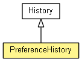

-
-
Field Summary
-
Fields inherited from class org.eclipse.net4j.util.collection.History
elements
-
Method Summary
-
Methods inherited from class org.eclipse.net4j.util.collection.History
add, changed, clear, createElement, get, getData, getElements, getMostRecent, indexOf, isEmpty, iterator, remove, setElements, size, toArray
-
Methods inherited from class org.eclipse.net4j.util.event.Notifier
addListener, fireEvent, fireEvent, fireEvent, fireThrowable, firstListenerAdded, getListeners, getNotificationService, hasListeners, lastListenerRemoved, removeListener
-
Methods inherited from class java.lang.Object
clone, equals, finalize, getClass, hashCode, notify, notifyAll, toString, wait, wait, wait
Copyright (c) 2011, 2012 Eike Stepper (Berlin, Germany) and others.